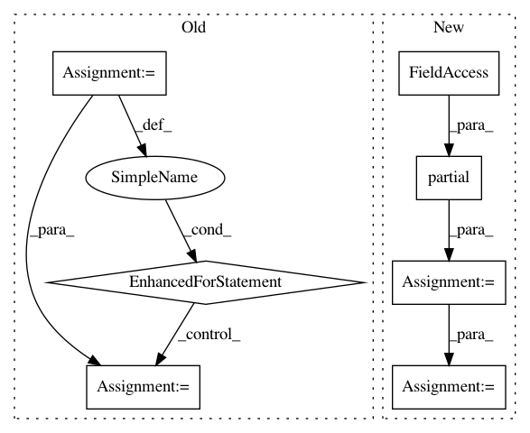

3592ffe3e5fe916afda27c49e477299ebc08f908,pyannote/audio/applications/change_detection.py,SpeakerChangeDetection,validate_epoch,#SpeakerChangeDetection#Any#Any#Any#Any#,185
Before Change
// NOTE -- embarrasingly parallel
// TODO -- parallelize this
for current_file in getattr(protocol, subset)():
reference = current_file["annotation"]
uri = get_unique_identifier(current_file)
hypothesis = peak.apply(predictions[uri], dimension=1)
hypothesis = hypothesis.to_annotation()
uem = get_annotated(current_file)
metric(reference, hypothesis, uem=uem)
purity, coverage, _ = metric.compute_metrics()
if purity < target_purity:
upper_alpha = current_alpha
After Change
peak = Peak(alpha=current_alpha, min_duration=0.0,
log_scale=model.logsoftmax)
metric = DiarizationPurityCoverageFMeasure(parallel=True)
validate = partial(validate_helper_func,
predictions=predictions,
peak=peak,
metric=metric)
_ = self.pool_.map(validate, validation_data)
purity, coverage, _ = metric.compute_metrics()
// TODO: normalize coverage with what one could achieve if
In pattern: SUPERPATTERN
Frequency: 3
Non-data size: 7
Instances
Project Name: pyannote/pyannote-audio
Commit Name: 3592ffe3e5fe916afda27c49e477299ebc08f908
Time: 2018-10-12
Author: bredin@limsi.fr
File Name: pyannote/audio/applications/change_detection.py
Class Name: SpeakerChangeDetection
Method Name: validate_epoch
Project Name: regel/loudml
Commit Name: 3e89af2795e199cecfd244a88b6530587b634072
Time: 2017-12-11
Author: sebastien.regel@gmail.com
File Name: python/loudml/som.py
Class Name: SOM
Method Name: map_vects
Project Name: dask/dask-image
Commit Name: b7ca885dd1148a94c13e87789d5a5947eaedfc37
Time: 2018-09-30
Author: jakirkham@gmail.com
File Name: dask_image/ndmeasure/__init__.py
Class Name:
Method Name: histogram